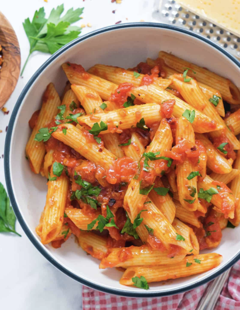

What is pasta?
Pasta is a type of Italian food typically made from wheat flour and water, and sometimes eggs. It comes in various shapes and sizes, such as spaghetti, penne, and fusilli. Pasta is often served with a variety of sauces, including tomato sauce, Alfredo sauce, and pesto.
Recepie for pasta:
- Boil water
- Add pasta to boiling water
- Cook for 8-10 minutes
- Drain the water
- Serve with sauce of your choice